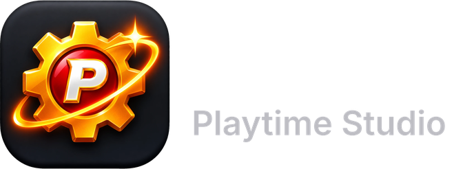

Spark is Playtime Studio's game engine for 2D, 3D and mobile games. These guides cover installing Spark, starting projects and exporting games.
Install Spark
Installers are on the Spark-Engine releases page (sign in to GitHub with your Playtime Studio account). There are two editions; you can install both side by side.
| Installer | Use it for |
|---|---|
Spark-<version>-setup-x86_64.exe | GDScript games. Smaller, nothing else to install, and the only edition that exports to the Web. |
Spark-CSharp-<version>-setup-x86_64.exe | Games scripted in C# (GDScript works too). Needs the .NET SDK 8 or newer for C#. |
Running a newer installer of the same edition updates Spark in place; projects and settings are kept.
Start a project
In the Project Manager click Create, name the project and pick a template:
| Template | What you get |
|---|---|
| Blank | An empty project with the Playtime Toolkit and theme. |
| 2D Platformer | A character that runs and jumps on platforms. |
| Top-down 2D | A character that moves in eight directions, walls and coins to collect. |
| Puzzle | A match-3 board: swap neighbouring tiles to clear rows of three or more. |
| Menu & UI | Title screen, settings, pause menu and a level-complete screen, wired together. |
| 3D Game | A character that walks and jumps in a 3D level. |
| Racing 3D | A drivable car on an oval track with a chase camera. |
| Mobile Game | A touch-controlled starting point set up for phones. |
Every new project gets the Playtime splash screen, the Spark icon, Windows and Android export presets, and the Playtime Toolkit.
Playtime Toolkit
The toolkit lives in addons/playtime_toolkit in every new project. Remove the folder and disable the plugin in Project > Project Settings > Plugins if a game doesn't need it.
| Autoload | Use |
|---|---|
SaveSystem | SaveSystem.save_game({"level": 3}, slot), load_game(slot), has_save(slot), delete_save(slot). |
AudioManager | play_music(stream, fade_time), stop_music(), play_sfx(stream, volume_db, pitch_variation) on the Music and SFX buses. |
Settings | Master, music and effects volume, fullscreen and vsync; saved and restored automatically. |
SceneManager | SceneManager.change_scene("res://level_2.tscn") with a fade, reload_scene(). |
Add addons/playtime_toolkit/pause_menu.tscn to a level for a pause menu on Esc with Resume, Settings and Quit. The Playtime UI theme is the project's default theme, so buttons, panels and sliders use Playtime's colours; use the HeaderLarge and HeaderMedium label variations for titles.
Export templates
Export templates are the pre-built engine that runs your exported game. Install them once per Spark version: Editor > Manage Export Templates > Install All Templates. Spark downloads its own templates; the C# edition downloads the C# templates automatically.
Spark's templates cover Windows (64-bit, 32-bit, ARM), Android, Web, and macOS and iOS once they've been built on a Mac.
Windows games
New projects have a Windows Desktop export preset. Project > Export, pick it and click Export Project. The game is a single .exe with the data embedded.
- Architecture: x86_64 for most PCs, arm64 for Snapdragon laptops, x86_32 for old 32-bit Windows.
- Graphics: games use Vulkan and switch to DirectX 12 automatically on PCs where Vulkan doesn't work.
Android games
C:\Program Files\Android\Android Studio\jbr) and Android SDK Path (usually C:\Users\<you>\AppData\Local\Android\Sdk).- Test on a phone: enable USB debugging on the phone, connect it, and click the Android icon in Spark's toolbar.
- APK: Project > Export, Android preset, Export Project.
- Google Play: turn on Use Gradle Build, set the export format to AAB and use a release keystore. Full steps are in
docs/android-export.mdin the Spark-Engine repository. - 2D Only: for games without 3D, tick Custom Template > 2D Only for a smaller app (applies when Gradle build is off).
Web games
Use the regular Spark edition (C# games can't export to the Web). Add a Web export preset in Project > Export.
- Thread Support: leave it off for sites like itch.io; it needs special server headers when on.
- 2D Only: for games without 3D, tick Variant > 2D Only for a smaller download that starts faster.
macOS & iOS
Apple's tools only run on a Mac, so the macOS and iOS templates are built there with a script in the Spark-Engine repository:
misc/scripts/build_apple_templates.sh ~/Downloads/Spark_v<version>.stable_export_templates.tpzIt adds macos.zip and ios.zip to the template file, which is then uploaded to its release. iOS exports produce an Xcode project that is finished on the Mac. Publishing on the App Store, or notarizing macOS games, needs an Apple Developer account.
C#
- Install the .NET SDK 8 or newer and the Spark (C#) edition.
- Attach a script and choose C#. Spark creates the
.csprojand.slnfiles. - Build with the hammer button, or just run the game.
Spark's C# packages (Spark.NET.Sdk) are installed with Spark (C#) and registered on the PC automatically, so they don't come from the internet. Older projects that use Godot.NET.Sdk switch to Spark.NET.Sdk when opened. Without the .NET SDK, Spark (C#) still opens GDScript projects and shows a warning.
Updates & versions
The Project Manager shows “Spark x.y is available” when a newer version is released; click it to open the release page.
Spark has its own version numbers (1.4, 1.5, …). Projects record the Spark version that last saved them, shown in the Project Manager; projects that were never opened in Spark show their Godot version there. Opening a project in a newer Spark updates it.
Export templates have their own version number, which only changes when the engine inside your games changes. Editor-only updates keep using the templates you already have, so there's nothing new to download for them. Editor > Manage Export Templates shows which template version your Spark uses.
Inside, Spark keeps a hidden compatibility level with the Godot version it's based on, so Godot projects, add-ons and tutorials keep working.
AI agents
AI agents such as Claude and ChatGPT can connect to the Spark editor and work in the open project: look at scenes and scripts, add and change nodes, write scripts, run the game and read its errors, take screenshots and export. You watch, approve and undo what they do.
Switching it on
- Open Editor > AI Agents.
- Tick Allow AI agents to connect. The window shows “Listening on 127.0.0.1:7338” (or the next free port). The setting is remembered.
- Only this computer can connect, and every request needs the Token shown in the window. New Token cuts off anyone using the old one.
- If an agent is refused, the window says when and why.
Claude Code
Open the Claude Code tab, copy the line and run it once in a terminal. It adds Spark for every project. Claude starts a small helper that ships with Spark (spark_mcp_bridge.exe), so Spark can be opened and closed at any time: while Spark is closed its tools say so, and they work again a few seconds after it opens.
Claude Desktop
- Open the Claude Desktop tab and copy the JSON.
- In Claude Desktop, go to Settings > Developer > Edit Config and add it to
claude_desktop_config.json(merge it with anymcpServersalready there). - Restart Claude Desktop.
ChatGPT and other apps
Apps on the same PC that connect to MCP servers over HTTP need the URL (http://127.0.0.1:7338/mcp) and an Authorization header with the value Bearer followed by the token. The ChatGPT and Others tab has both with Copy buttons. ChatGPT in the browser can't reach your PC yet.
Approvals
Changes by agents sets when Spark asks you first:
- Allowed without asking: agents change the project freely.
- Ask once per agent (the default): a prompt the first time an agent wants to change something.
- Ask every time: a prompt for every change.
The prompt shows the agent and what it wants to do, with Allow Once, Allow This Agent, Deny and Block Agent. An unanswered prompt is denied after two minutes. Looking at the project, reading files and taking screenshots never ask.
Working with agents
- Each change to a scene is one undo step named after the agent, e.g. [claude-code] Add Coin, so Ctrl+Z takes it back. Agents can also undo their own last change.
- Writing files (scripts, shaders) and running editor scripts can't be undone with Ctrl+Z; use version control.
- The window lists connected agents and an Activity feed of every call.
| Tool | Does |
|---|---|
get_project_info, list_files, read_file | Look at the project |
get_scene_tree, get_node, get_class_info | Look at scenes, nodes and engine classes |
create_scene, open_scene, save_scene | Make, open and save scenes |
add_node, set_properties, delete_nodes, move_node | Edit the scene being edited |
write_file, attach_script, connect_signal | Write scripts and wire them up |
run_project, stop_project, get_output, screenshot | Test the game and see the result |
run_editor_script, export_project, undo | Anything else, exporting, undoing |
Code signing
Unsigned installers and games make Windows show “Unknown publisher”. With a code-signing certificate in Playtime Studio's name:
- Spark installers: add the
WINDOWS_CERT_PFX(Base64 of the.pfx) andWINDOWS_CERT_PASSWORDsecrets to the Spark-Engine repository; the installer workflow then signs everything. - Games: set Editor Settings > Export > Windows > Signtool, then enable Codesign in the Windows export preset with the
.pfxand its password.
Learning the engine
Spark is based on the Godot Engine and keeps its project formats, nodes and scripting, so Godot's documentation, tutorials and add-ons apply to Spark. Inside Spark, press F1 to search the built-in class reference.